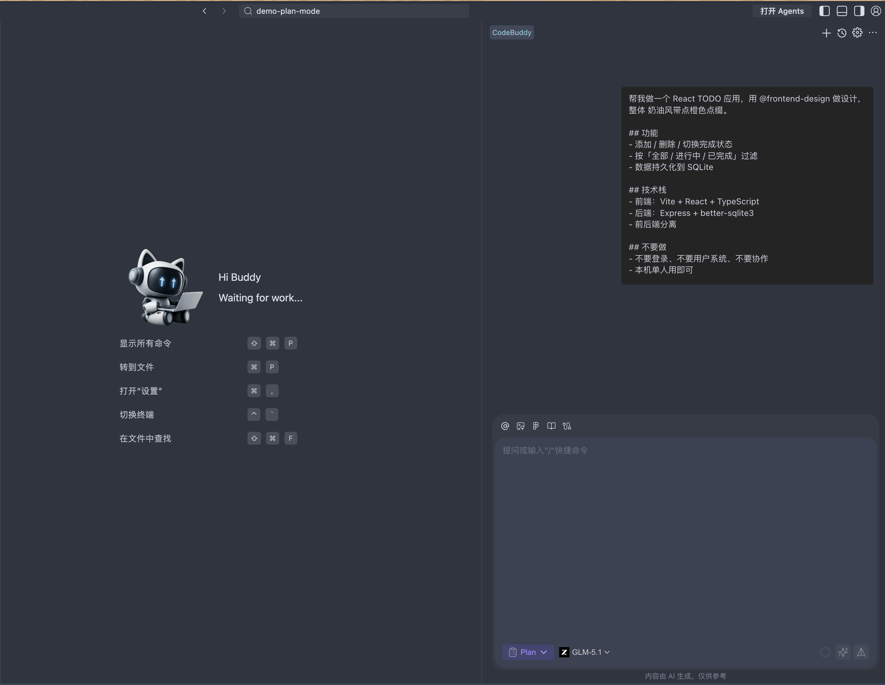
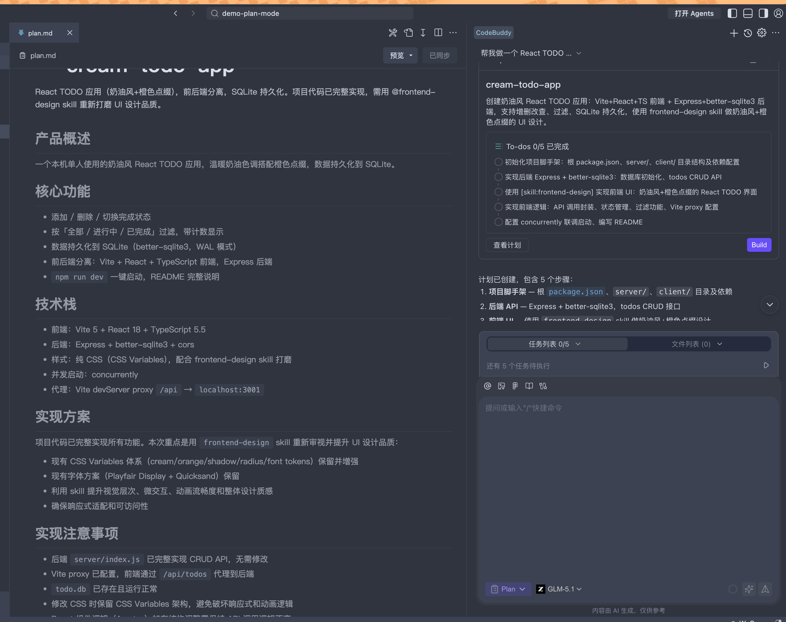
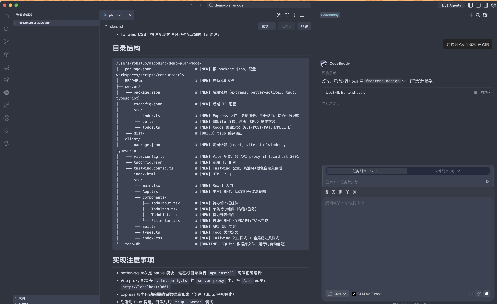
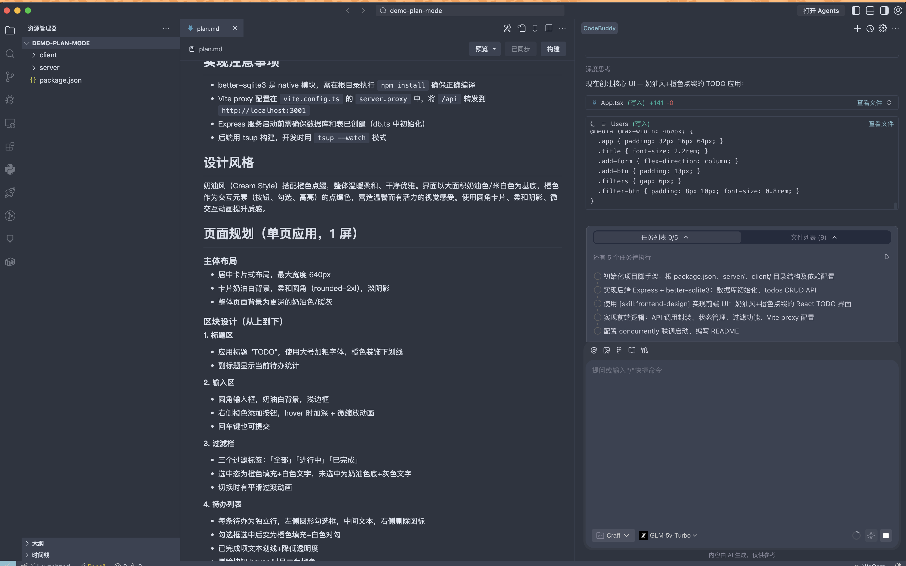
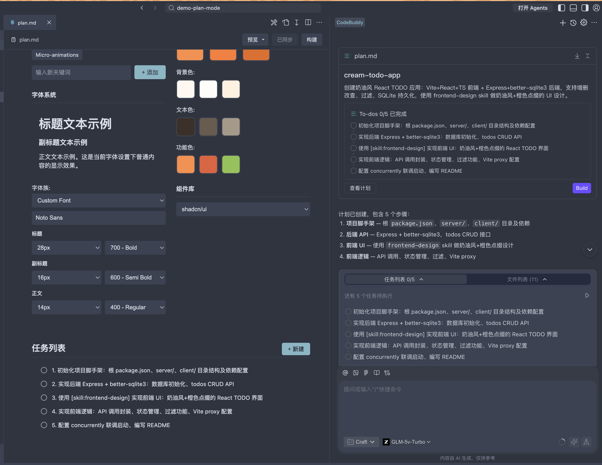
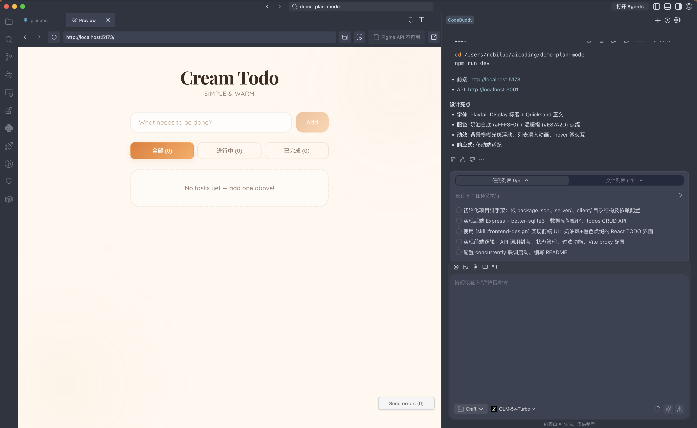
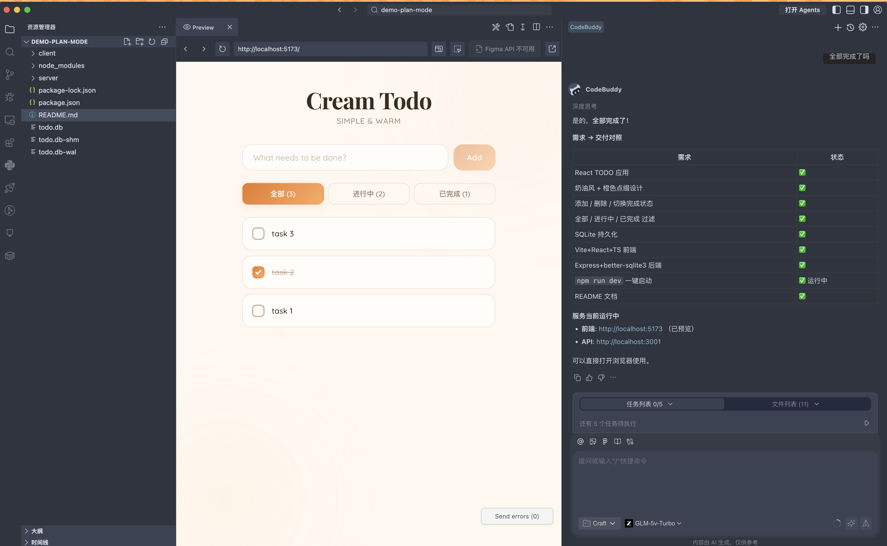

04实战案例-Plan 模式
什么是 Plan 模式？
Plan 模式 = 先规划 · 后执行 · 全程可审
与 Ask（只答不改）、Craft（直接改）不同，Plan 模式会让 AI 先拆解任务、生成一份可勾选的任务清单，由你确认后，再逐项自主执行。每做完一步都会展示 Diff 供你审阅，随时可打断、追加指令、回滚。
这是处理 跨文件改动、端到端功能开发、复杂重构 时最可控也最高效的工作方式——AI 做"执行者"，你做"审阅者"。
✅ 适合用 Plan 模式 推荐
- 从 0 到 1 搭建一个完整功能（如本文 TODO 应用）
- 跨多个文件的联动修改、重构
- 涉及数据库 / API / 前端三层联调
- 需要先看完整方案再决定是否实施
- 想让 AI "一次做完" 而不是来回对话
⏭️ 更适合 Ask / Craft 非此场景
- 只想问一个 API 用法、概念问题 → Ask
- 给某个函数加 loading / 错误处理 → Craft
- 单文件的局部代码修改 → Craft
- 边写边调、高频试错的探索性编码 → Craft
实战：用 Plan 模式创建一个 React + SQLite TODO 应用
新建项目目录demo-plan-mode, 使用CodeBuddy IED打开目录, 用快捷键唤出对话面板：macOS Ctrl + ⌘ + I，Windows Ctrl + Win + I，在模式切换按钮里选择 Plan。把 目标、技术栈、设计风格、不做什么、交付标准 一次写完，用 @frontend-design 引导视觉风格。示例需求（可直接粘贴）：
# 需求：React + SQLite TODO 应用 帮我做一个 React TODO 应用，用 @frontend-design 做设计， 整体 奶油风带点橙色点缀。 ## 功能 - 添加 / 删除 / 切换完成状态 - 按「全部 / 进行中 / 已完成」过滤 - 数据持久化到 SQLite ## 技术栈 - 前端：Vite + React + TypeScript - 后端：Express + better-sqlite3 - 前后端分离 ## 不要做 - 不要登录、不要用户系统、不要协作 - 本机单人用即可 ## 交付 - 可以 `npm run dev` 跑起来 - 给我一份 README 说明启动步骤
输入框占位符变为"描述一个你想实现的目标…"，贴入上面的需求后回车，AI 开始规划。

💡 Tip：Plan 模式对"约束条件"最敏感——写清楚不要什么往往比要什么更能省时间。
方案第二部分是 API 设计、数据库表结构、功能规划。这一步能让你在一行代码都没写时，就确认"做出来大概是这个样子"。
发现接口路径不合规范、字段缺索引、页面缺空状态——现在改一句，比代码写完再重构便宜 10 倍。

AI 不会立刻写代码，而是先给你一份 可编辑的技术方案——第一部分通常是 目录结构，你能清楚看到要新建哪些文件、各自职责是什么。
server/ 与 client/ 清晰分离，每个文件标注 [NEW] / [BUILD] / [RUNTIME]。不合理的地方直接说"把 FilterBar 合并进 TodoList"即可。

方案没问题后，可以先追问一句 "还有需要澄清的吗？"，AI 会再扫一遍需求盲点。确认无误后告诉它 "切换到 Craft 模式，开始吧"。
Plan 只思考不动手（零破坏性），Craft 会真实创建/修改文件。你的角色也从"审稿人"切换为"监工"。

Craft 模式按 Step 2-3 的方案 逐文件创建、逐命令执行：初始化脚手架 → 写后端 → 写前端 → 安装依赖。每一步都可 暂停 / 追加说明 / 拒绝。
AI 逐个写出 package.json / server/index.js / client 脚手架，并自动运行 npm install。

依赖安装完毕、所有源码就位，随时可以 npm run dev 起服务。

💡 随时可以喊停：某个文件写得不对，点 💬 追加说明（如"错误响应统一返回 {code, message}"），AI 修正当前文件后继续。
全部落地后，AI 会把 README 启动说明推给你。一条命令就能同时跑前后端：
# 根目录一条命令同时启动前后端 cd demo-plan-mode && npm install && npm run dev # 浏览器访问 前端：http://localhost:5173 API ：http://localhost:3001
本机 SQLite 持久化，关了浏览器数据也还在。验收自查：✅ 添加 · ✅ 切换完成 · ✅ 删除 · ✅ 三 tab 过滤 · ✅ 刷新数据在 · ✅ todo.db 生成。

4.3
Plan 模式使用小贴士
先定边界再开工
在需求里显式写不要做什么，比补丁式追加更能缩小计划范围、少走弯路。
大胆编辑清单
AI 给的清单只是"初稿"。删掉无关步骤、合并冗余步骤，再点"继续执行"，节省大量 token 和时间。
用 @ 注入上下文
@文件夹 让 AI 先读你的代码再规划；@skill 触发专业流程（如 @frontend-design、@test-driven-dev）。
不合意立刻打断
任何一步 Diff 不对劲，就点"拒绝"或"追加说明"。比全做完再回滚省心得多。
阶段性提交
每完成几步就 git commit。Plan 模式虽可控，Git 依然是你的最后一道安全网。
交付前跑测试
让 AI 在清单最后加一步"运行并截图验证"，配合 playwright-cli skill 做端到端回归。